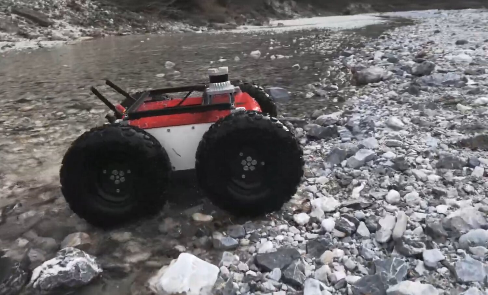
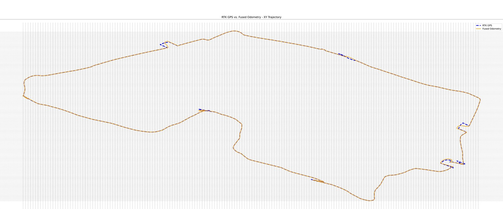
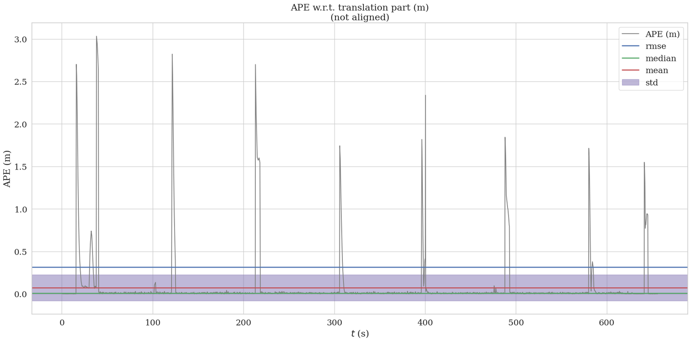
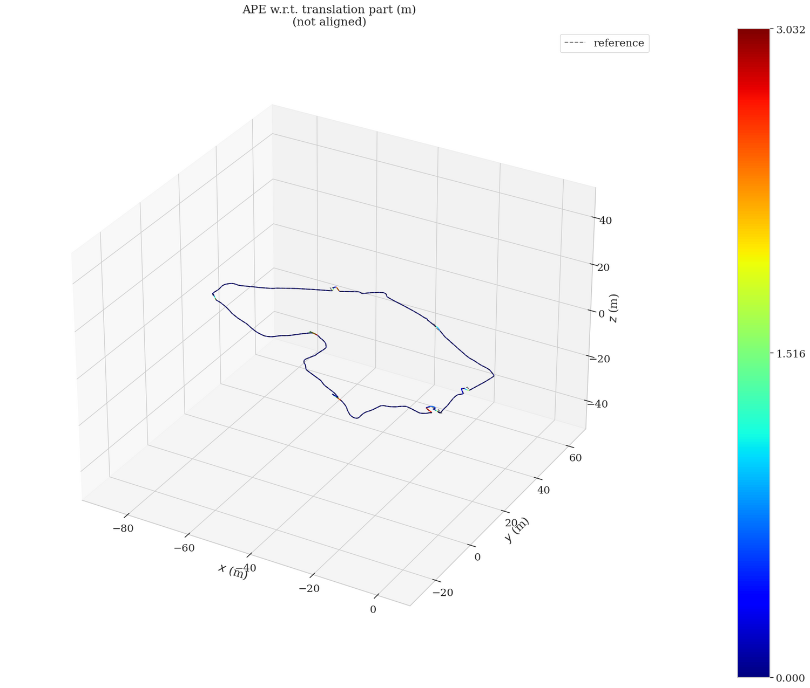

A robust 3D localization system for Clearpath Jackal and Panther UGVs in complex outdoor terrain — fusing RTK-GNSS, a 9-DOF IMU, wheel odometry, and RealSense visual odometry through a dual-EKF architecture, tuned to bridge GNSS degradation from multipath and outages.

Outdoor UGVs live and die by their position estimate — but RTK-GNSS alone breaks down under multipath, canopy, and outages, and a single sensor can't cover every failure mode. I built a fused localization stack that stays smooth and accurate through the exact conditions where raw GPS falls apart.
I evaluated the fused estimate rigorously against the RTK reference using evo, over a ~11-minute field run covering ~2 km. The result: a median absolute pose error under 1 cm, with the fused estimate staying smooth through GPS glitches the raw signal couldn't survive.



The stack runs on real Clearpath Jackal and Panther platforms in the field — delivering a localization estimate that holds sub-centimetre agreement with RTK while remaining robust to the GNSS failures that make outdoor autonomy hard.